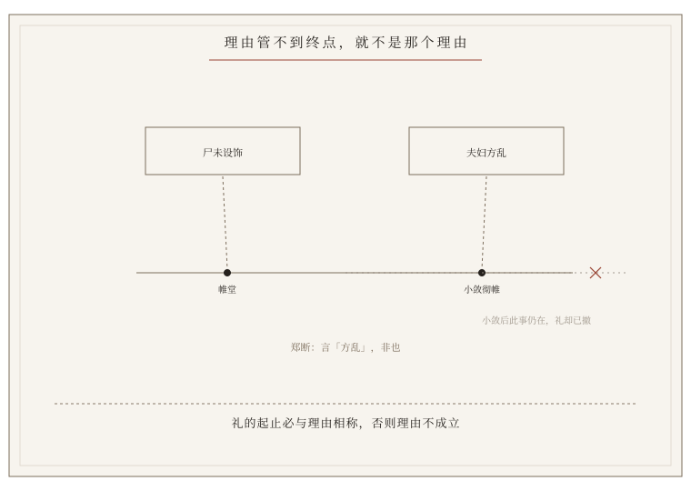

檀弓上 · 三·八十二 · 第 285 课
曾子曰：「尸未設飾，故帷堂，小斂而徹帷。」仲梁子曰：「夫婦方亂，故帷堂，小斂而徹帷。」
说什么事：同一条礼——停尸时张帷幕，小敛之后撤去，两个解释。曾子说：尸还没有加饰（未穿衣冠），所以要遮；小敛之后就撤。仲梁子说：因为夫妇此时正乱，所以要遮；小敛之后就撤。
落在哪一层：礼意的解释权。论「一个礼，两个理由，孰是」。
为何编在此位：上节论「非所托」，此节论「非所释」——上节说礼不可由私意索取，此节说礼不可由私意解说。
【经】曾子曰：「尸未設飾，故帷堂，小斂而徹帷。」仲梁子曰：「夫婦方亂，故帷堂，小斂而徹帷。」
【注】斂者動搖尸，帷堂，為人褻之。言「方亂」，非也。仲梁子，魯人也。
【疏】此一节论小敛失礼之事。知「方乱非」者，以小敛之后岂无夫妇方乱之事，何故彻帷乃云「方乱」？明为动摇尸柩，故帷堂。案《春秋》定五年，鲁有仲梁怀，是仲梁，鲁人之姓，故知「仲梁子，鲁人也」。
尸 死者既敛而未葬之称。此处指始死未敛之尸。
设饰 加饰，即穿衣、加冠等。注以「敛者动摇尸」为说，则饰指敛时之饰。
帷堂 在堂上设帷幕遮蔽。
小敛 为死者穿衣，次于是大敛（入棺）。
彻帷 撤去帷幕。彻，通「撤」。
夫妇方乱 夫妇此时正忙乱（一说指男女之事杂乱）。仲梁子以此为帷堂之由。
褻 轻慢、亵渎。
曾子说：「尸还没有加饰，所以在堂上设帷幕；小敛之后就撤去。」仲梁子说：「因为夫妇正在忙乱，所以设帷幕；小敛之后就撤去。」
同一条礼，两个人给理由。曾子的理由是「尸未设饰」，仲梁子的理由是「夫妇方乱」。
郑玄只否后者，两个字：「非也。」
疏把否定的道理讲得很干脆：若帷堂是为避「夫妇方乱」，那小敛之后夫妇之事难道就没有了？为何那时候反而要撤帷？可见帷堂不是为避嫌，是为「动摇尸柩」——敛时要搬动尸体，怕人看见，才要遮。
注给出的正面理由是：「敛者动摇尸，帷堂，为人亵之。」
于是三种说法摆在一起：曾子说遮「未饰之尸」，仲梁子说遮「夫妇之乱」，郑玄说遮「动摇之尸」。前两说是「为什么要遮」，后一说是「遮的是什么」。
第一层 反例检验：一个理由的试金石 仲梁子之说之所以被否，不是因为不雅，而是因为它经不起一个简单的追问：既为避嫌，为何小敛后不遮？礼的起止必与理由相称；理由在，礼就该在；礼去了而理由还在，理由就不成立。这一招是汉儒解礼的常用法，此节用得最干净。
第二层 曾子之说为何也不算错 「尸未设饰」与「动摇尸」并不冲突：正因为尸尚未加饰（还是那具未装裹的身体），敛时又要搬动它，所以才要遮。曾子说的是状态，郑说的是动作，两者是一件事的两面。郑所否的只是仲梁子。
第三层 「为人亵之」的分寸 遮的目的不是神秘，是不让人轻慢这具身体。死者在礼里始终有它的尊严位置：可以哭它，不可以亵它。帷，是这道界线的物化。
第四层 与 280 同一手法 280 曾子否仲宪「示民」之说，此节郑玄否仲梁子「方乱」之说。两处都不是否认事实，而是否认解释的普遍性。礼的解释若不能通过「起止相称」这一关，就只是后人的附会。
与今日何干 今人解释传统礼俗，最爱的正是「避嫌」一类说法：这条是为防男女，那条是为防闲话。此节示范了一个简单的检验：把理由套回去，看它能不能管到礼的终点。管不到，就不是那个理由。
| 左 | 右 |
|---|---|
| 尸未设饰 | 曾子之说 |
| 夫妇方乱 | 仲梁子之说 |
| 皆曰小敛而彻帷 | 两说所同 |
| 言「方乱」，非也 | 郑之断 |
| 敛者动摇尸 | 帷之实由 |
| 为人亵之 | 所避者人 |
| 小敛后岂无夫妇之事 | 反例检验 |
| 理由与起止须相称 | 释礼之准 |
画一间堂屋，视点平。堂上横张着一幅素帷（帷面平整，垂至地面），帷后隐约可见一张矮榻的轮廓与榻上覆着的素衾（只见形，不见人）。帷前一方案，案上放着尚未穿用的一套衣裳（叠得整齐，未展开）。堂下有两人对语：一人（深衣、正面、手指向帷），一人（深衣、侧身、摇头）。不写文字、不画人面细节。赭色只用在素帷下缘的一道垂线与案上那叠衣裳的束带。
